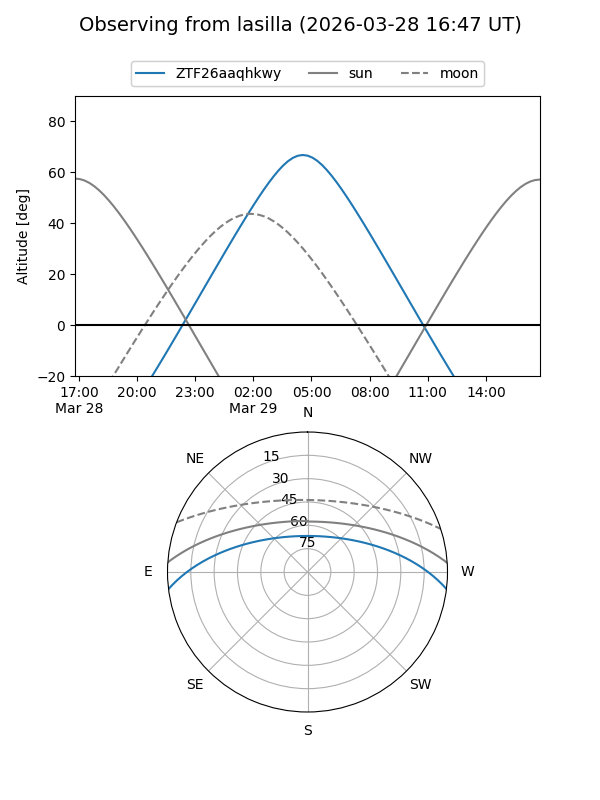
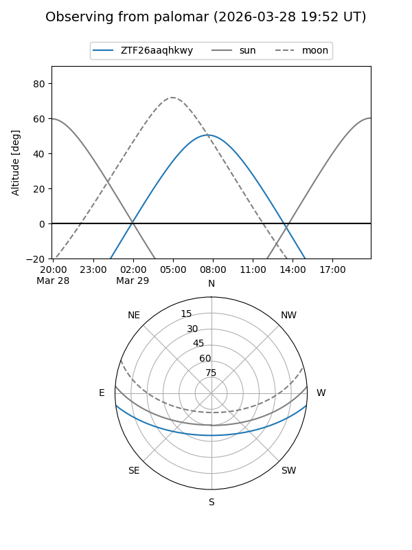

ZTF26aaqhkwy
Target ZTF26aaqhkwy at 2026-03-29 09:46
Aliases and brokers:
FINK: link
Lasair: link
ALeRCE: link
alt names
ZTF26aaqhkwy (ztf,fink_ztf)
Coordinates:
equatorial (ra, dec) = 183.8728,-5.93209
equatorial (HMS+DMS) = 12:15:29.47,-05:55:55.51
galactic (l, b) = (286.8791,+55.81525)
Flags:
Photometry:
last ztfg=17.54
1 ztfg detections
Lightcurve
Visibility


Additional plots